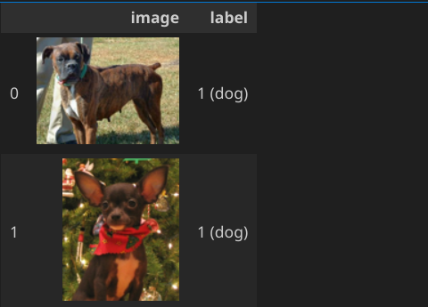
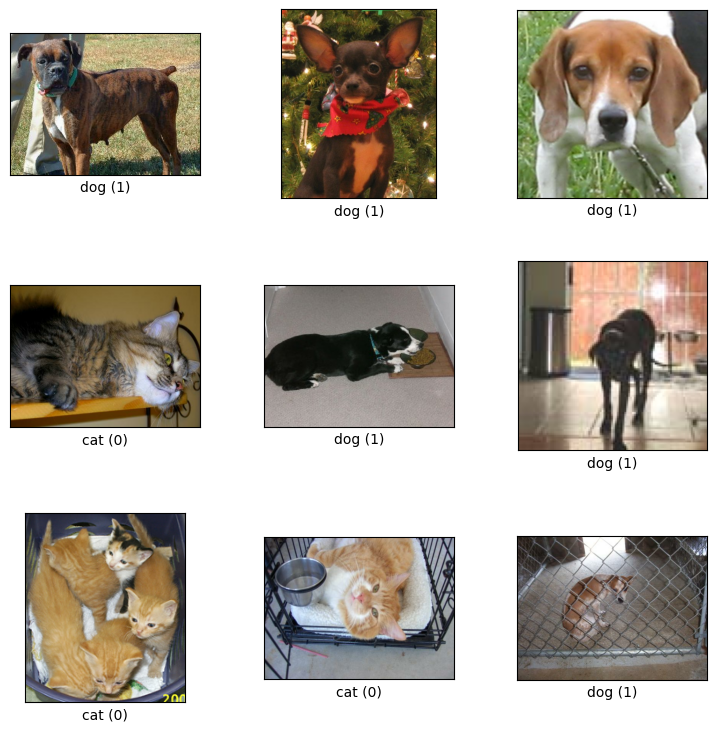
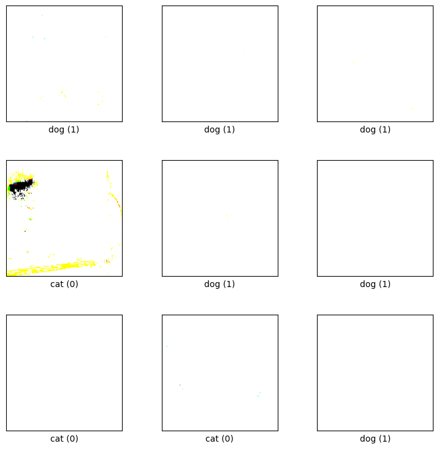
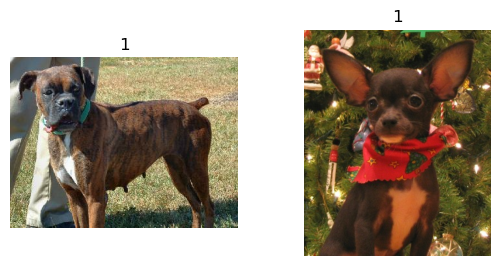
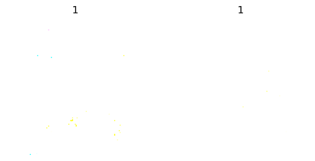
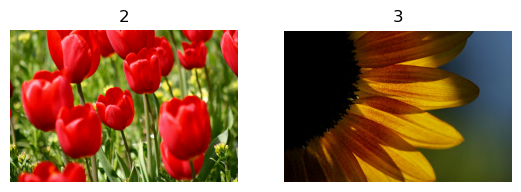
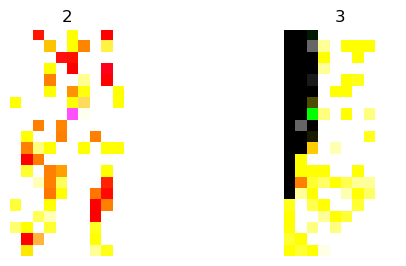

June 22, 2025
Class 9.1: Transfer Learning Example
"The cost in the made-up dataset
is dependent on the species, so the previous learning should be helpful."
To verify:
https://claude.ai
Enter "what is the average cost of each species?"
and upload iris_cost.csv.
Response:
Based on the analysis of your iris cost data, here are the average costs for each species:
Average Cost by Species:
Setosa: $2.24 (77 samples)
Range: $1.23 - $4.54
Versicolor: $4.85 (75 samples)
Range: $1.54 - $8.70
Virginica: $7.26 (98 samples)
Range: $2.50 - $13.89
June 27, 2025
Error after map function
Several methods of displaying images in a dataset fail after the map function has been applied.
The problem seems to depend on the size of the dataset.
Sizes:
- mnist: 22.1 MB
- cifar10: 133.3 MB
- tf_flowers: 221.9 MB
- cats_vs_dogs: 690.1 MB
The problem does not occur with the mnist dataset.
Example 1: tf_flowers
Dataset loading
(train_ds, validation_ds), metadata= tfds.load(
"cats_vs_dogs",
data_dir=DATA_PATH,
split=["train[:40%]", "train[40%:50%]"],
with_info=True,
as_supervised=True,)
map Function:
size = (150, 150)
train_ds = train_ds.map(lambda x, y: (tf.image.resize(x, size), y))
Image output before and after map function:
| Before |
After |
|
tfds.as_dataframe(train_ds.take(2), metadata)
|
|  |
KeyError: ((1, 1, 3), '<f4') |
|
fig = tfds.show_examples(train_ds, metadata)
|
|  |

WARNING:matplotlib.image:Clipping input data to the valid range for imshow with RGB data ([0..1] for
floats or [0..255] for integers).
|
plt.figure(figsize=(10, 10))
for i, (image, label) in enumerate(train_ds.take(2)):
ax = plt.subplot(3, 3, i + 1)
plt.imshow(image)
plt.title(int(label))
plt.axis("off")
|
|  |

WARNING:matplotlib.image:Clipping input data to the valid range for imshow with RGB data ([0..1] for
floats or [0..255] for integers).
|
Example 2: mnist
Example 3: cifar10
Example 4: tf_flowers different code
map Function:
size = (20, 10)
train_ds = train_ds.map(lambda x, y: (tf.image.resize(x, size), y))
| Before |
After |
|
plt.figure(figsize=(10, 10))
for i, (image, label) in enumerate(train_ds.take(2)):
ax = plt.subplot(3, 3, i + 1)
plt.imshow(image)
plt.title(int(label))
plt.axis("off")
|
|  |
 |
Solution:
Divide by 255.0 in lambda function
train_ds = train_ds.map(lambda x, y: (tf.image.resize(x, (150,150))/ 255.0, y))